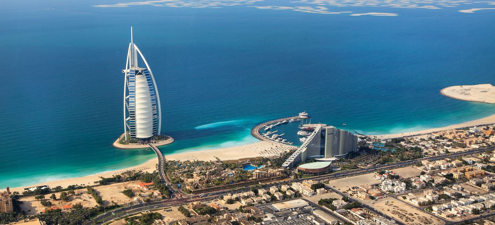
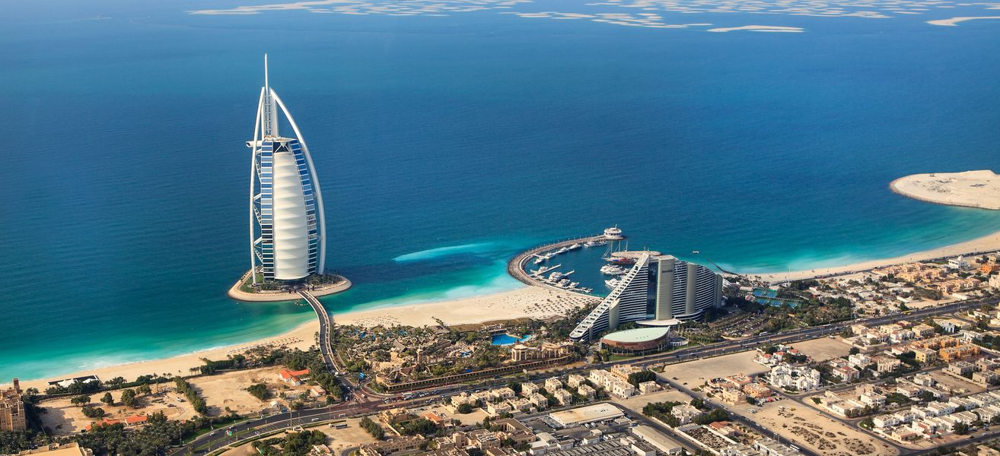

All inclusive dosłownie oznacza wszystko w cenie. Mowa tutaj o jedzeniu i piciu. Zazwyczaj są to trzy główne posiłki w ciągu dnia, czyli śniadanie, obiad i kolacja, które są w podawane formie bufetu w głównej restauracji oraz napoje bezalkoholowe i alkoholowe (często lokalne), dostępne w wyznaczonych przez hotel barach i godzinach. Często hotele oferują późne śniadania dla śpiochów (może być to bufet dostępny przy basenie), przekąski w ciągu dnia, owoce, kawę, herbatę i ciasto po południu, a nawet zupę nocną, przed samym zamknięciem restauracji.